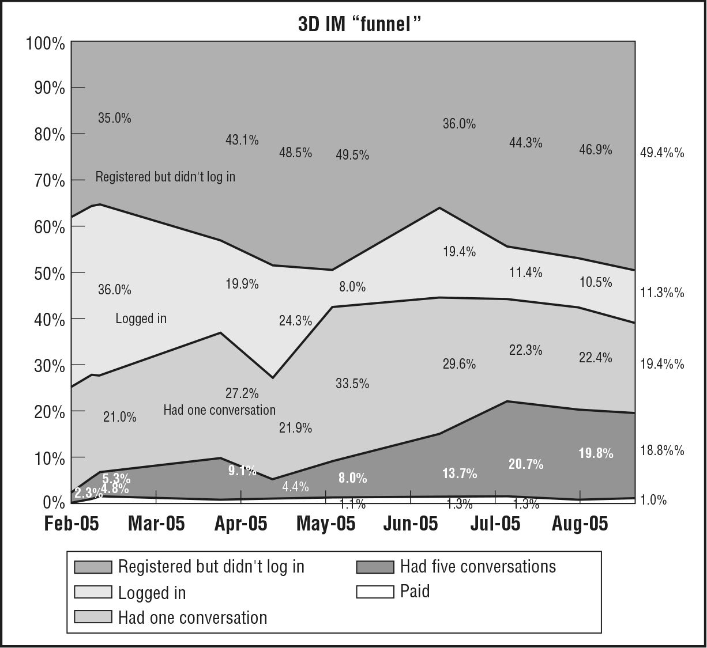

Here’s what innovation accounting looked like for us in the early days of IMVU. Our minimum viable product had many defects and, when we first released it, extremely low sales. We naturally assumed that the lack of sales was related to the low quality of the product, so week after week we worked on improving the quality of the product, trusting that our efforts were worthwhile. At the end of each month, we would have a board meeting at which we would present the results. The night before the board meeting, we’d run our standard analytics, measuring conversion rates, customer counts, and revenue to show what a good job we had done. For several meetings in a row, this caused a last-minute panic because the quality improvements were not yielding any change in customer behavior. This led to some frustrating board meetings at which we could show great product “progress” but not much in the way of business results. After a while, rather than leave it to the last minute, we began to track our metrics more frequently, tightening the feedback loop with product development. This was even more depressing. Week in, week out, our product changes were having no effect.
We tracked the “funnel metrics” behaviors that were critical to our engine of growth: customer registration, the download of our application, trial, repeat usage, and purchase. To have enough data to learn, we needed just enough customers using our product to get real numbers for each behavior. We allocated a budget of five dollars per day: enough to buy clicks on the then-new Google AdWords system. In those days, the minimum you could bid for a click was 5 cents, but there was no overall minimum to your spending. Thus, we could afford to open an account and get started even though we had very little money.1
Five dollars bought us a hundred clicks—every day. From a marketing point of view this was not very significant, but for learning it was priceless. Every single day we were able to measure our product’s performance with a brand new set of customers. Also, each time we revised the product, we got a brand new report card on how we were doing the very next day.
For example, one day we would debut a new marketing message aimed at first-time customers. The next day we might change the way new customers were initiated into the product. Other days, we would add new features, fix bugs, roll out a new visual design, or try a new layout for our website. Every time, we told ourselves we were making the product better, but that subjective confidence was put to the acid test of real numbers.
Day in and day out we were performing random trials. Each day was a new experiment. Each day’s customers were independent of those of the day before. Most important, even though our gross numbers were growing, it became clear that our funnel metrics were not changing.
Here is a graph from one of IMVU’s early board meetings:

This graph represents approximately seven months of work. Over that period, we were making constant improvements to the IMVU product, releasing new features on a daily basis. We were conducting a lot of in-person customer interviews, and our product development team was working extremely hard.
To read the graph, you need to understand something called cohort analysis. This is one of the most important tools of startup analytics. Although it sounds complex, it is based on a simple premise. Instead of looking at cumulative totals or gross numbers such as total revenue and total number of customers, one looks at the performance of each group of customers that comes into contact with the product independently. Each group is called a cohort. The graph shows the conversion rates to IMVU of new customers who joined in each indicated month. Each conversion rate shows the percentage of customers who registered in that month who subsequently went on to take the indicated action. Thus, among all the customers who joined IMVU in February 2005, about 60 percent of them logged in to our product at least one time.
Managers with an enterprise sales background will recognize this funnel analysis as the traditional sales funnel that is used to manage prospects on their way to becoming customers. Lean Startups use it in product development, too. This technique is useful in many types of business, because every company depends for its survival on sequences of customer behavior called flows. Customer flows govern the interaction of customers with a company’s products. They allow us to understand a business quantitatively and have much more predictive power than do traditional gross metrics.
If you look closely, you’ll see that the graph shows some clear trends. Some product improvements are helping—a little. The percentage of new customers who go on to use the product at least five times has grown from less than 5 percent to almost 20 percent. Yet despite this fourfold increase, the percentage of new customers who pay money for IMVU is stuck at around 1 percent. Think about that for a moment. After months and months of work, thousands of individual improvements, focus groups, design sessions, and usability tests, the percentage of new customers who subsequently pay money is exactly the same as it was at the onset even though many more customers are getting a chance to try the product.
Thanks to the power of cohort analysis, we could not blame this failure on the legacy of previous customers who were resistant to change, external market conditions, or any other excuse. Each cohort represented an independent report card, and try as we might, we were getting straight C’s. This helped us realize we had a problem.
I was in charge of the product development team, small though it was in those days, and shared with my cofounders the sense that the problem had to be with my team’s efforts. I worked harder, tried to focus on higher- and higher-quality features, and lost a lot of sleep. Our frustration grew. When I could think of nothing else to do, I was finally ready to turn to the last resort: talking to customers. Armed with our failure to make progress tuning our engine of growth, I was ready to ask the right questions.
Before this failure, in the company’s earliest days, it was easy to talk to potential customers and come away convinced we were on the right track. In fact, when we would invite customers into the office for in-person interviews and usability tests, it was easy to dismiss negative feedback. If they didn’t want to use the product, I assumed they were not in our target market. “Fire that customer,” I’d say to the person responsible for recruiting for our tests. “Find me someone in our target demographic.” If the next customer was more positive, I would take it as confirmation that I was right in my targeting. If not, I’d fire another customer and try again.
By contrast, once I had data in hand, my interactions with customers changed. Suddenly I had urgent questions that needed answering: Why aren’t customers responding to our product “improvements”? Why isn’t our hard work paying off? For example, we kept making it easier and easier for customers to use IMVU with their existing friends. Unfortunately, customers didn’t want to engage in that behavior. Making it easier to use was totally beside the point. Once we knew what to look for, genuine understanding came much faster. As was described in Chapter 3, this eventually led to a critically important pivot: away from an IM add-on used with existing friends and toward a stand-alone network one can use to make new friends. Suddenly, our worries about productivity vanished. Once our efforts were aligned with what customers really wanted, our experiments were much more likely to change their behavior for the better.
This pattern would repeat time and again, from the days when we were making less than a thousand dollars in revenue per month all the way up to the time we were making millions. In fact, this is the sign of a successful pivot: the new experiments you run are overall more productive than the experiments you were running before.
This is the pattern: poor quantitative results force us to declare failure and create the motivation, context, and space for more qualitative research. These investigations produce new ideas—new hypotheses—to be tested, leading to a possible pivot. Each pivot unlocks new opportunities for further experimentation, and the cycle repeats. Each time we repeat this simple rhythm: establish the baseline, tune the engine, and make a decision to pivot or persevere.